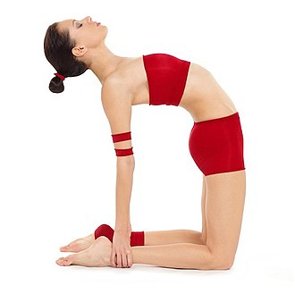
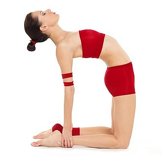

source: Yoga Journal
kneeling on shins OR thunderbolt OR Diamond


source


source: Yoga Journal
| Current pose: standing on shins | Adjacent poses: child's pose | kneeling on shins OR thunderbolt OR Diamond | camel pose | |
|
left-right symmetric |
source: Yoga Journal
kneeling on shins OR thunderbolt OR Diamond  source: Yoga Journal |